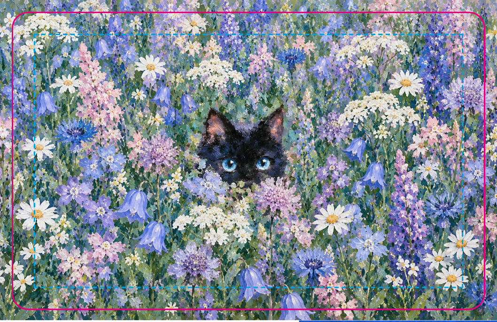
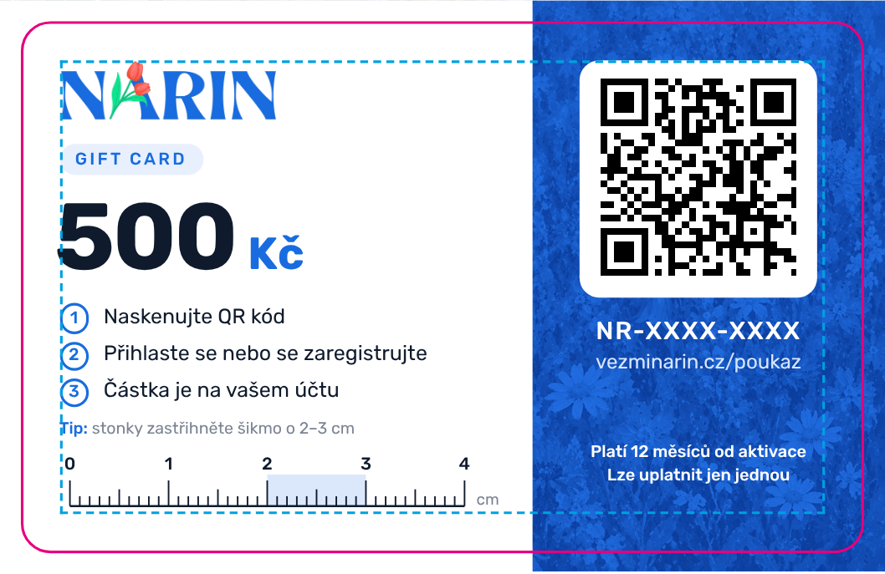

Květinářství NARIN, Praha · vezminarin.cz · kontakt: support@vezminarin.cz
| Formát | CR80 – 85,6 × 54 mm, na šířku, zaoblené rohy r = 3 mm |
|---|---|
| Materiál | Bílé PVC 0,76 mm (standardní platební karta) |
| Povrch | Lícní strana: matná laminace (malba vypadá lépe než v lesku). Rub: matný nebo lesklý, podle vašeho doporučení. QR kód musí jít bez odlesků naskenovat telefonem. |
| Tisk | 4/4 CMYK. Líc je stejný pro všechny karty jednoho nominálu. Rub je personalizovaný: každá karta má vlastní QR kód a číslo. |
| Bez | magnetického proužku, čipu, podpisového proužku a embosingu |
| Náklad | 20 ks, z toho 4 motivy lícní strany (viz tabulka níže) |
| Nominál (rub) | Motiv lícní strany | Počet | Pořadí v souborech |
|---|---|---|---|
| 500 Kč | scene-1 (černá kočka v lučních květech) | 6 | karty 01–06 |
| 1 000 Kč | scene-2 (siamská kočka na louce) | 6 | karty 07–12 |
| 1 500 Kč | scene-3 (bílá kočka ve fialových květech) | 4 | karty 13–16 |
| 2 000 Kč | scene-4 (zrzavé kotě na cestě) | 4 | karty 17–20 |
| Velikost stránky PDF | 89,6 × 58 mm = čistý formát + spadávka 2 mm na každé straně |
|---|---|
| Bezpečná zóna | 4 mm od čistého formátu. Všechny texty a QR jsou uvnitř. |
| Rozlišení | ilustrace líce 410–440 dpi ve finální velikosti. Texty, QR a modré plochy jsou vektorové, fonty (Rubik) jsou vložené. |
| Barvy | Soubory jsou v RGB (sRGB). Prosíme o převod do CMYK vaším profilem pro PVC. Firemní modrá #186ce0 ≈ C85 M50 Y0 K0. Hlídejte, aby nesklouzla do fialova. QR kód tiskněte čistou černou K100, ne soutiskovou. Číslo karty je bílé na modrém pruhu (vysazené z modré). |
| Ořez, rohy | PDF neobsahují ořezové značky ani výsek. Zaoblení r = 3 mm dělá standardní výsek CR80. |


Kód a QR na náhledu jsou ukázkové. Skutečné jsou v tiskových souborech.